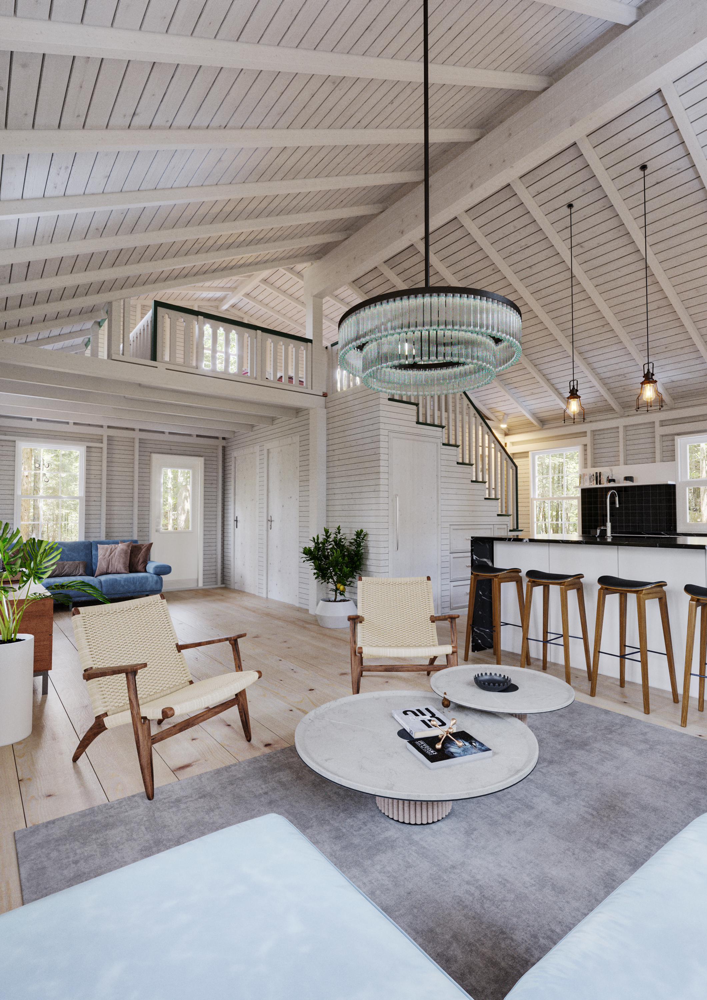
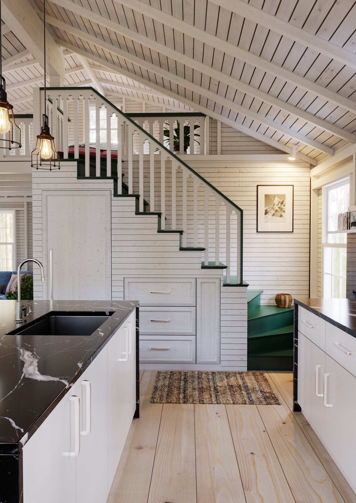
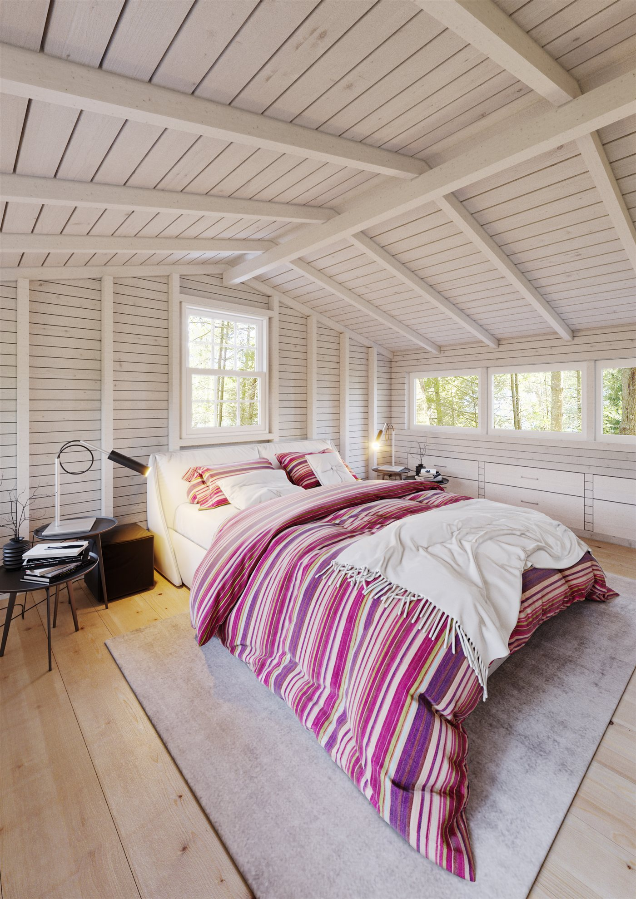
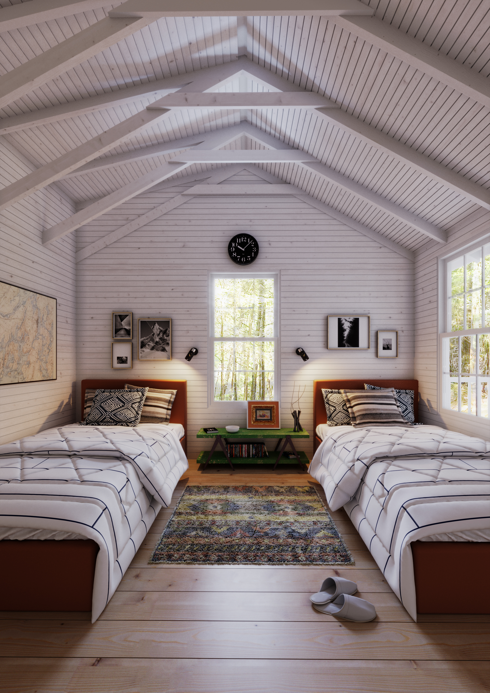
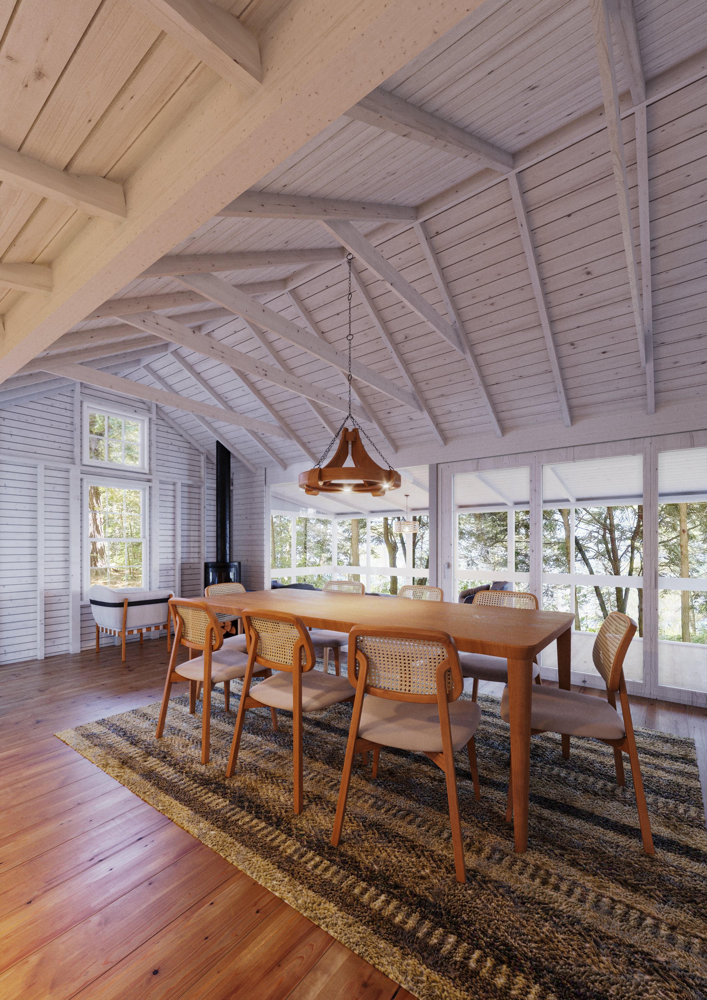
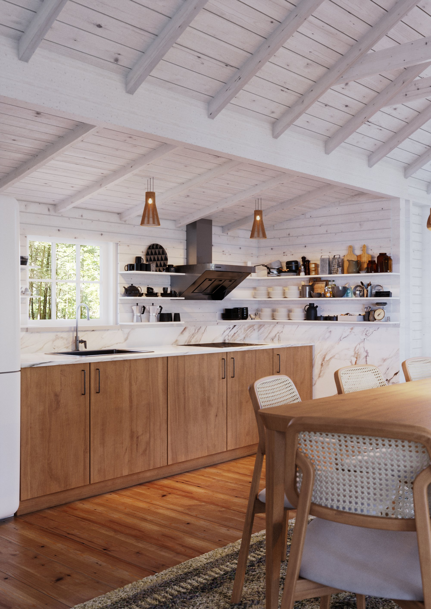

Hidden in plain sight on a Maine lake.
The Cobbossee Cabins are a restoration of three 1910 cabins that had suffered from recent years of disuse. Sited on a public lake across from a nature preserve, the cabins are ‘hidden’ by their exterior palette, choice of windows, building heights, and details. Inside, these small spaces are bright and airy — navigating a line between contemporary and classic.
This multigenerational compound creates many private and communal spaces in a small footprint, including separate buildings for daytime and evening gathering, summer-camp sleeping porches, and two four-season buildings meant to withstand tough Maine winters. To achieve the rustic look our preservationist and antique-dealer clients desired, we “padded” the buildings with “outboard” insulation, maintaining the patina of all interior spaces — over one hundred years of family-camp charm and history.
The highest cabin is the gathering space for cocktails and romantic evening meals, and sports a wood stove. The middle cabin is the largest, with two bedrooms, laundry, and wintertime amenities. The cabin closest to the lake is the main lunchtime gathering spot, with a lofted bedroom atop a classic green-and-white staircase — its second gabled roof added as surreptitiously as possible. Everywhere, these buildings blend and marry classic Maine cabin features with sleek and functional modern touches, but always in deference to the original.





